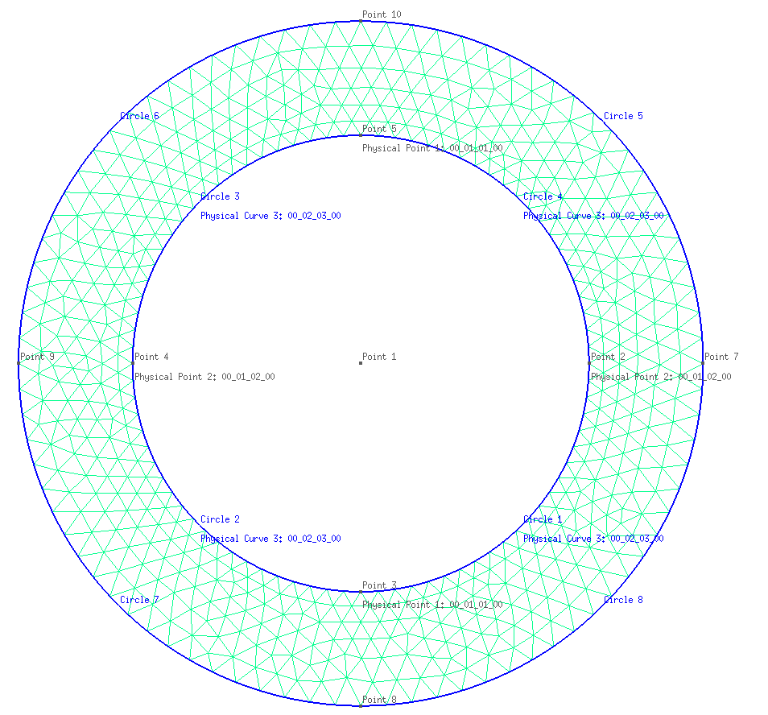

Plane strain ring example
In this example a hollow cylinder submitted to an internal pressure $p_i$ as shown in diagram depicted below is considered. The length of the cylinder is $L_z $ m and the internal and external radious are $R_i$ and $R_e$, respectively.

Before defining the structs, the workspace is cleaned, the ONSAS directory is added to the path and scalar geometry and material parameters are defined:
close all;
if ~strcmp(getenv('TESTS_RUN'), 'yes')
clear all;
end
addpath(genpath([pwd '/../../src']));
E = 210;
nu = 0.3;
p = 0.01;
L = .75;
global Re
global Ri
Re = 200;
Ri = 100;Linear analysis
Analytic solution
The solution displacement field is extracted from chapter 4 of (Timoshenko and Goodier, Theory of Elasticity, 3rd edition). The Navier's equation, imposing no temperature variation, no volumetric forces, and considering a radial dispalcement field leads to:
\[\nabla (\nabla . \textbf{u}(r,\theta,z) ) = 0\]
Due to the symmetry of the problem $\mathbf{\mathit{u_{\theta}}} = 0 $ and also $\mathbf{ \mathit{ \textbf{u} (r,\theta,z) } } = \mathbf{ \mathit{ \textbf{u}(r,z) } } $. Thus, according to the boundary conditions stated above $\mathit{u_z(r,z)=0}$ and the radial displacements field $\mathit{u_r(r)}$ only varies with $r$. Thereafter by imposing the boundary conditions stated above and substituting ($E$, $\nu$) into Lamé parameters ($\lambda=\frac{ E\nu }{(1 + 2\nu )(1 - 2\nu )}$ and $\mu=\frac{ E\nu }{(1 + 2\nu )}$) we obtain:
\[u_r(r) = Ar + \dfrac{B}{r} \\ A = \dfrac{(1+\nu)(1-2\nu)R_i^2p_i}{E(R_e^2-R_i^2)}, \quad B = \dfrac{(1+\nu)R_i^2R_e^2p_i}{E(R_e^2-R_i^2)}\]
Numerical solution
MEB parameters
materials
The constitutive behavior of the material considered is isotropic linear elastic. Since only one material is considered, the structs defined for the materials contain only one entry:
materials = struct();
materials.modelName = 'elastic-linear';
materials.modelParams = [E nu];elements
In this plane model, three kinds of elements are used: triangle for the solid, edges to add pressure loads and nodes to set additional boundary conditions for the numerical resolution. Since three kinds of elements are used, the struct has length 3:
elements = struct();
elements(1).elemType = 'node';
elements(2).elemType = 'edge';
elements(2).elemCrossSecParams = L;
elements(3).elemType = 'triangle';
elements(3).elemTypeParams = 2;
elements(3).elemCrossSecParams = L;where elemCrossSecParams field sets the thickness of the edge and elemTypeParams sets the plane strain triangle element.
boundaryConds
Three BCs are considered, one corresponding to a load and two for displacements. The first two BCs constrain displacements in $x$ and $y$ global directions respectively:
boundaryConds = struct();
boundaryConds(1).imposDispDofs = [1];
boundaryConds(1).imposDispVals = [0];
boundaryConds(2).imposDispDofs = [3];
boundaryConds(2).imposDispVals = [0];then the third BC corresponds to the normal pressure. This is introduced in local coordinates. The first entry is the force along the local x coordinate of the edge (tangent), the second is the moment along that direction and the third is the force towards the normal vector obtained by rotating the tangent vector 90 degrees in global axis $z$:
boundaryConds(3).loadsCoordSys = 'local';
boundaryConds(3).loadsTimeFact = @(t) t;
boundaryConds(3).loadsBaseVals = [0 0 p 0 0 0];Mesh
The mesh can be read from the msh file. However, if any changes to the mesh are desired, the .geo file can be edited and the msh file can be re-generated using GMSH.
The element properties are set using labels into GMSH follwing the MEB nomenclature. First triangle elements have linear elastic material so entry $1$ of the materialṣ struct is assigned. Then for both node and edge elements any material is set. Next displacement boundary conditions are assigned to the element, since the problem is modeled into $x-y$ plane, a constrain to avoid rotation along $z$ is necessary. This is done fixing $y$ and $x$ displacements (using boundaryConds(1) and boundaryConds(2) as labels) on points 2 3 4 5. Finally the internal pressure is applied on the edge elements linked with curves from one to four (Circles 1-4 in Figure). In accordance with the orientation of the curve set in GMSH, the normal vector obtained in local coordinates is $e_r$ so the internal pressure is assigned using boundaryConds(3). Once the mesh is created is read using:
base_msh = '';
if strcmp(getenv('TESTS_RUN'), 'yes') && isfolder('examples')
base_msh = ['.' filesep 'examples' filesep 'ringPlaneStrain' filesep];
end
mesh = struct();
[mesh.nodesCoords, mesh.conecCell] = meshFileReader([base_msh 'ring.msh']);initialConds
Any non-homogeneous initial conditions are considered, thereafter an empty struct is set:
initialConds = struct();Analysis parameters
The Newton-Raphson method is employed to solve 2 load steps. The ratio between finalTime and deltaT sets the number of load steps used to evaluate boundaryConds(3).loadsTimeFact function:
analysisSettings = struct();
analysisSettings.methodName = 'newtonRaphson';
analysisSettings.stopTolIts = 30;
analysisSettings.stopTolDeltau = 1.0e-12;
analysisSettings.stopTolForces = 1.0e-12;
analysisSettings.finalTime = 1;
analysisSettings.deltaT = .5;Output parameters
otherParams = struct();
otherParams.problemName = 'linear_PlaneStrain';
otherParams.plots_format = 'vtk';The ONSAS software is executed for the parameters defined above and the displacement solution of each load(time) step is saved in matUsmatrix:
[modelCurrSol, modelProperties, BCsData] = initONSAS(materials, elements, boundaryConds, initialConds, mesh, analysisSettings, otherParams);After that the structs are used to perform the numerical time analysis
[matUs, loadFactorsMat, modelSolutions] = solveONSAS(modelCurrSol, modelProperties, BCsData);Verification
The numerical and analytic solutions are compared at the final load step for the internal and external surface (since all the elements on the same surface have the same analytic solution):
A = (p * (1 + nu) * (1 - 2 * nu) * Ri^2) / (E * (Re^2 - Ri^2));
B = (p * (1 + nu) * Ri^2 * Re^2) / (E * (Re^2 - Ri^2));
analyticValRi = A * Ri + B / Ri;
dofXRi = 1;
numericalRi = matUs(dofXRi, end);
analyticValRe = A * Re + B / Re;
dofXRe = (8 - 1) * 6 + 3;
numericalRe = matUs(dofXRe, end);The numerical and analytical solution for the internal and external surface are plotted:
lw = 2.0;
ms = 11;
plotfontsize = 10;
figure;
hold on;
grid on;
plot(matUs(dofXRi, :), loadFactorsMat(:, 3), 'ro', 'linewidth', lw, 'markersize', ms);
plot(linspace(0, analyticValRi, length(loadFactorsMat(:, 3))), loadFactorsMat(:, 3), 'k-', 'linewidth', lw, 'markersize', ms);
plot(matUs(dofXRe, :), loadFactorsMat(:, 3), 'ro', 'linewidth', lw, 'markersize', ms);
plot(linspace(0, analyticValRe, length(loadFactorsMat(:, 3))), loadFactorsMat(:, 3), 'k-', 'linewidth', lw, 'markersize', ms);
labx = xlabel('Displacement [m]');
laby = ylabel('\lambda(t)');
legend('Numeric', 'Analytic', 'location', 'East');
set(gca, 'linewidth', 1.2, 'fontsize', plotfontsize);
set(labx, 'FontSize', plotfontsize);
set(laby, 'FontSize', plotfontsize);
print('output/verifLinearRingPlaneStrain.png', '-dpng');
Finally the deformed configuration is illustrated:

Elastoplastic analysis
Semi-analytic solution
The solution is extracted from Hill (The mathematical theroy of plasticity, 1950). The yielding pressure $p_0$ is defined as,
\[Y = \dfrac{2\sigma_{Y,0}}{\sqrt{3}} \\ p_0 = \dfrac{Y}{2}\left(1+\dfrac{R_i^2}{R_e^2}\right).\]
The radial displacement of the outer surface of the ring is given by,
\[u_r(R_e) = \text{if}~~ p \leq p_0 \\ \dfrac{2 p R_e}{E \left( \dfrac{R_e^2}{R_i^2-1}\right) }( 1-\nu^2 ) \\ \text{else} \\ \dfrac{2pR_e}{E\left(\dfrac{R_e^2}{R_i^2-1}\right)}(1-\nu^2)\]
where $c$ denotes the plastic front surface in the ring and is given by the implicit function,
\[\dfrac{p}{Y} = ln\left(\dfrac{c}{R_i}\right) + \dfrac{1}{2}\left(1-\dfrac{c^ 2}{R_e^2}\right)\]
Numerical solution
E = 210;
nu = 0.3;
H = 0;
sigmaY0 = 0.24;
L = .75;
p = 0.01;MEB parameters
materials
The constitutive behavior of the material considered is isotropic hardening. Since only one material is considered, the structs defined for the materials contain only one entry:
materials.modelName = 'isotropicHardening';
materials.modelParams = [E nu H sigmaY0];elements
The elements struct is the same as the previous model.
boundaryConds
The BC struct is the same as in the elastic-linear case. However the loadsTimeFact function can be modified to consider unloading as follows.
boundaryConds(3).loadsTimeFact = @(t) t * (t <= 19) + (t - (t - 19) * 2) * (t > 19);initialConds
Any non-homogeneous initial conditions are considered, thereafter the struc is the same as in the previous example.
Mesh
The mesh can be read from the msh file. The same mesh as in the elastic-linear case is considered for this problem.
Conec = myCell2Mat(mesh.conecCell);
elems = size(Conec, 1);Analysis parameters
The Newton-Raphson method is employed to solve 19 load steps. The ratio between finalTime and deltaT sets the number of load steps used to evaluate boundaryConds(3).loadsTimeFact function:
analysisSettings.methodName = 'newtonRaphson';
analysisSettings.stopTolIts = 30;
analysisSettings.stopTolDeltau = 1.0e-8;
analysisSettings.stopTolForces = 1.0e-6;
analysisSettings.finalTime = 19;
analysisSettings.deltaT = 1;Output parameters
otherParams.problemName = 'EPP_PlaneStrain';
otherParams.plots_format = 'vtk';The ONSAS software is executed for the parameters defined above and the displacement solution of each load(time) step is saved in matUsmatrix:
[modelCurrSol, modelProperties, BCsData] = initONSAS(materials, elements, boundaryConds, initialConds, mesh, analysisSettings, otherParams);After that the structs are used to perform the numerical time analysis
[matUs, loadFactorsMat, modelSolutions] = solveONSAS(modelCurrSol, modelProperties, BCsData);Verification
The numerical and analytic solutions are compared for the external surface (since all the elements on the same surface have the same analytic solution):
global Y
Y = 2 * sigmaY0 / sqrt(3);
p0 = Y / 2 * (1 - Ri^2 / Re^2); % Yielding pressure
pressure_vals = loadFactorsMat(:, 3) * p;
cvals = zeros(length(pressure_vals), 1);
ubAna = zeros(length(pressure_vals), 1);
for i = 1:length(cvals)
p = pressure_vals(i);
if i == 1
% val = fsolve(@(c)cValue(c,p,Y,a,b), a) ;
val = fsolve(@(c)cValue(c, p, Y, Ri, Re), Ri);
else
% val = fsolve(@(c)cValue(c,p,Y,a,b), cvals(i-1)) ;
val = fsolve(@(c)cValue(c, p, Y, Ri, Re), cvals(i - 1));
end
cvals(i) = val;
end
for i = 1:length(cvals)
p = pressure_vals(i);
if p < p0
% ubAna(i) = 2*p*b / ( E*( b^2/a^2-1 ) ) * (1-nu^2) ;
ubAna(i) = 2 * p * Re / (E * (Re^2 / Ri^2 - 1)) * (1 - nu^2);
else
c = cvals(i);
% ubAna(i) = Y*c^2/(E*b) * (1-nu^2) ;
ubAna(i) = Y * c^2 / (E * Re) * (1 - nu^2);
end
endPlots
lw = 2.0;
ms = 11;
plotFontSize = 10;
fig = figure;
hold on;
grid on;
node = 5;
dofX = node * 6 - 5;
ubNum = matUs(dofX, :);
plot(ubNum, pressure_vals, 'b-o', 'linewidth', lw, 'markersize', ms);
plot(ubAna, pressure_vals, 'g-x', 'linewidth', lw, 'markersize', ms);
legend ({'FEM', 'Analytic'}, 'location', 'east');
labx = xlabel('u_b');
laby = ylabel('p');
tit = title('p-u_b');
set(labx, 'fontsize', plotFontSize * .8);
set(laby, 'fontsize', plotFontSize * .8);
set(tit, 'fontsize', plotFontSize);The numerical solution is verified for both cases:
analyticCheckTolerance = 1e-2;
verifBoolean = ((numericalRi - analyticValRi) < analyticCheckTolerance) && ...
((numericalRe - analyticValRe) < analyticCheckTolerance) && ...
((ubNum(end) - ubAna(end)) < analyticCheckTolerance);